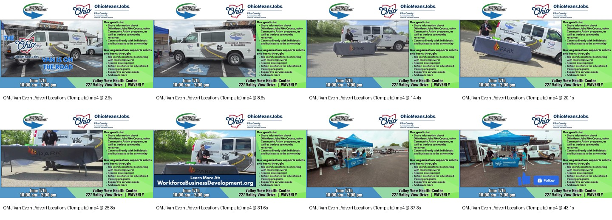

Event Video Advert / Reusable Social Template
OMJ Van Event Advert Template
Created a reusable video advert concept for recurring OhioMeansJobs van events, transforming a static monthly flyer workflow into a more engaging social media promotion.

Project Goal
Bring recurring OMJ van event flyers to life while keeping the template easy for a coworker to update with new date, time, and location details.
Tools: Canva, Clipchamp, Camera gimbal, Original footage, Music
My Role
Designed a branded static layout in Canva with logos along the top and event explanation/details along the right side.
Shot all event footage personally using a camera gimbal.
Included the OMJ van and outreach table setup in the footage.
Edited the full video in Canva and Clipchamp.
Applied a desaturated-to-vivid color shift timed to the music.
Used fades, morph transitions, outward pan/spiral motion, close-up table pans, wide shots, and sideways pan footage from another event.
Added animated on-screen graphics promoting Facebook and the website.
Designed the file as a reusable template for future monthly event promotion.
Process
Identified a recurring static flyer workflow that could be improved.
Created an editable visual structure so future event details could be quickly swapped.
Captured original event footage to make the asset feel grounded and real.
Synced motion, color, and transitions to the music for a more polished social video.
Skills Demonstrated
Original video capture
Camera gimbal use
Social media event advertising
Reusable template design
Motion design
Color treatment
Music-driven editing
Morph transitions
Animated CTA graphics
Branded Canva template creation
Coworker handoff/editable workflow design